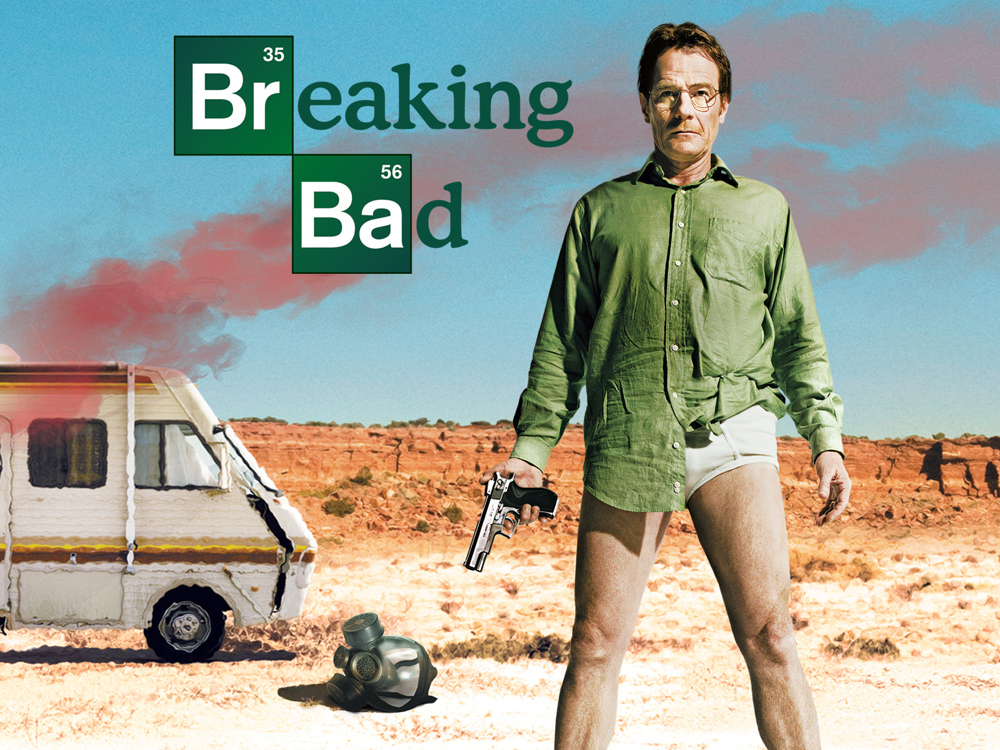

Описание
Уолтер Уайт, учитель химии в школе, узнав о смертельной болезни, решает заняться производством метамфетамина вместе с бывшим учеником Джесси Пинкманом. Постепенно он превращается в безжалостного криминального авторитета.
Основная информация
Год выпуска: 2008
Автор: Винс Гиллиган
Жанр: Драма, криминал, триллер
Количество сезонов: 5
Заставка
Постер сериала
Дополнительная информация
Коммерческий успех
| Показатель | Результат |
|---|---|
| Количество сезонов | 5 |
| Количество эпизодов | 62 |
| Награды | 16 премий «Эмми» |
Известная цитата
"I am the one who knocks!"
— Уолтер Уайт